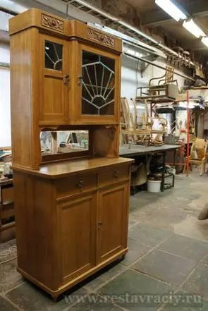
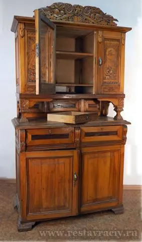
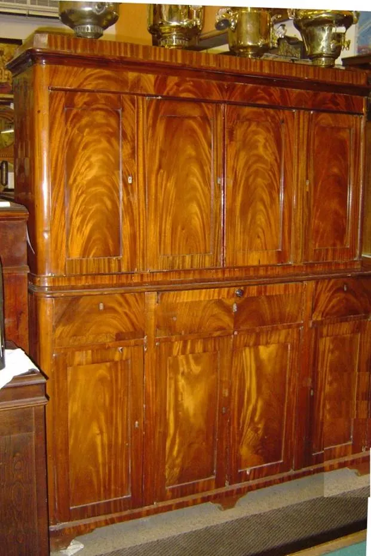
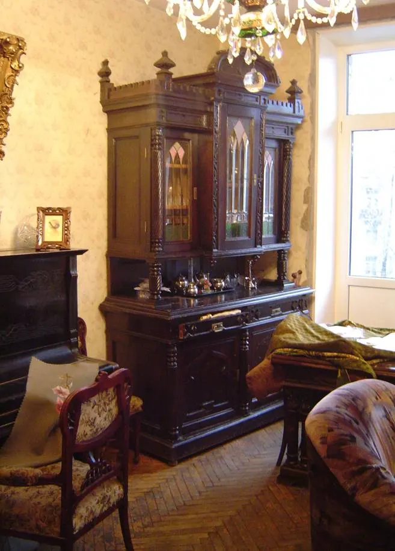
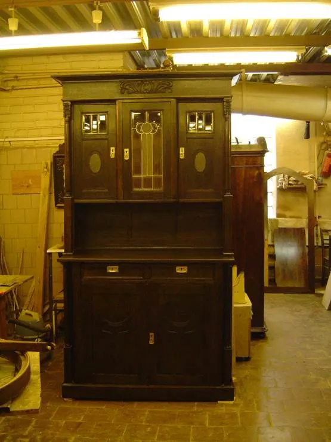
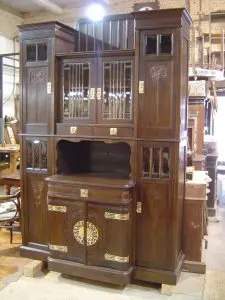
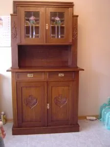
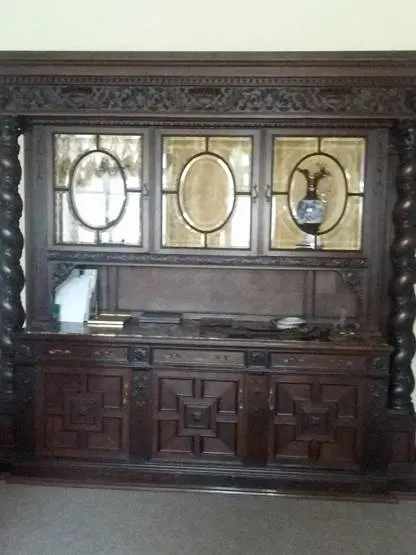

Мебель
Реставрация буфета
За дверцами буфета прячутся полки, направляющие ящиков и механизм замка. Витражи, утраты шпона и пятна от посуды оцениваем отдельно. Если уцелели старые ключи и детали, их стоит показать вместе с предметом.


Буфет и сервант
В отдельном разборе мастерская приводит отправные суммы от 80 000 ₽ для буфета и от 60 000 ₽ для серванта. Это ориентиры из материала, а работы по конкретному предмету оценивают отдельно.
Посмотрите стекло в дверцах, состояние замков и поверхности полок. Стоит записать, где хранилась мебель и когда появились запах, пятна или отслоения.
О чём рассказывает мастерская
- Буфет
- Сервант
- Антикварный буфет
- Реставрация серванта
- Реставрация старого буфета
- Реставрация буфета своими руками
- Стекло в буфете
- Оценка буфета из вишни
В материале мастерской
Фотографии и детали



Открыть снимок у мастерской


Открыть снимок у мастерской


Открыть снимок у мастерской


Открыть снимок у мастерской


Открыть снимок у мастерской


Открыть снимок у мастерской


Открыть снимок у мастерской
Посмотреть снимки с сайта мастерской 1
Оригинальные фотографии откроются здесь с сайта мастерской.
 Открыть снимок у мастерской
Открыть снимок у мастерской Есть похожая вещь?
Подберите ракурсы для предварительной оценки.